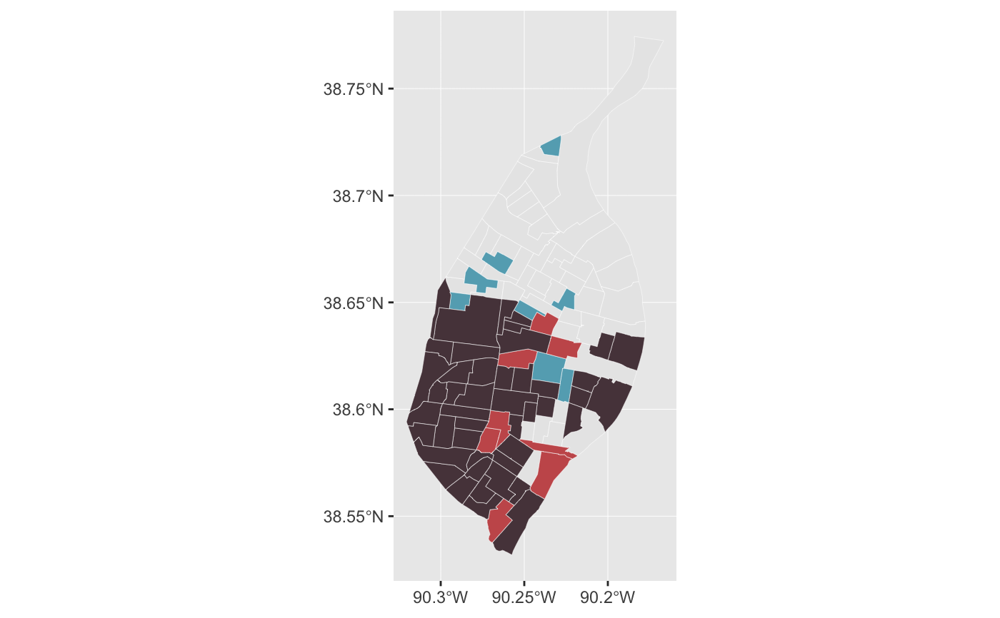
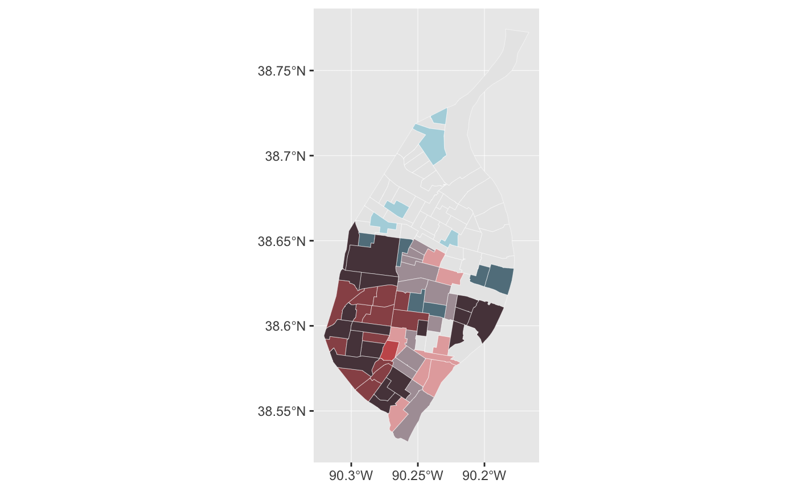

Applies the selected palette as the fill aesthetic when geom_sf
is used and the bi_class variable is given as the fill in the aesthetic
mapping.
bi_scale_fill(pal, dim = 3, ...)
| pal | Either palette name (one of |
|---|---|
| dim | The dimensions of the palette, either |
| ... | Arguments to pass to |
A ggplot object with the given bivariate palette applied to the data.
#># add breaks, 2x2 data <- bi_class(stl_race_income, x = pctWhite, y = medInc, dim = 2) # create map ggplot() + geom_sf(data = data, aes(fill = bi_class), color = "white", size = 0.1, show.legend = FALSE) + bi_scale_fill(pal = "GrPink", dim = 2)# add breaks, 3x3 data <- bi_class(stl_race_income, x = pctWhite, y = medInc, dim = 3) # create map ggplot() + geom_sf(data = data, aes(fill = bi_class), color = "white", size = 0.1, show.legend = FALSE) + bi_scale_fill(pal = "GrPink", dim = 3)